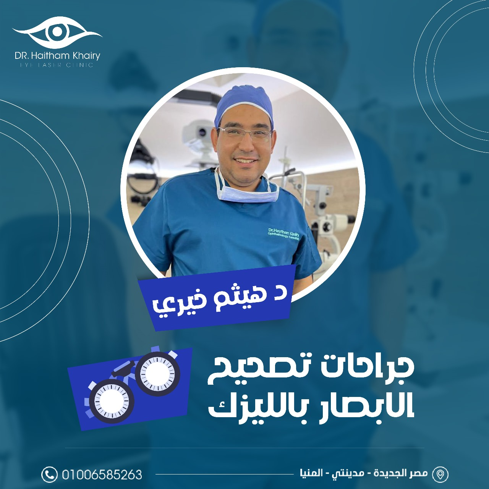
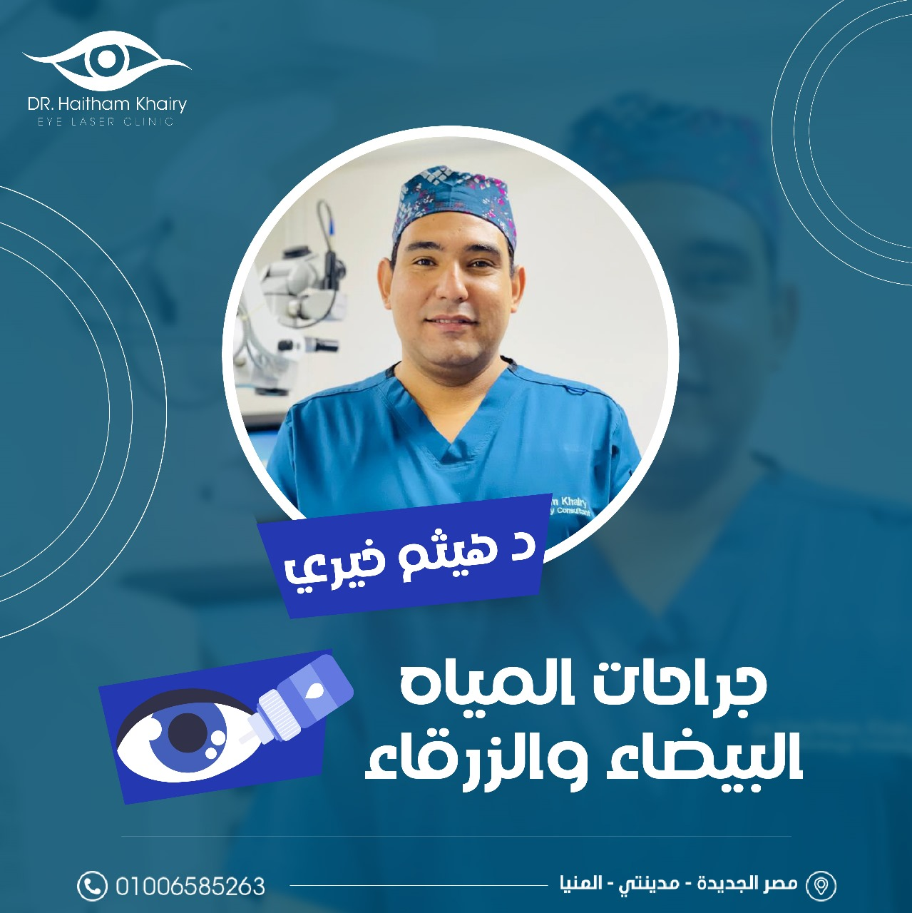
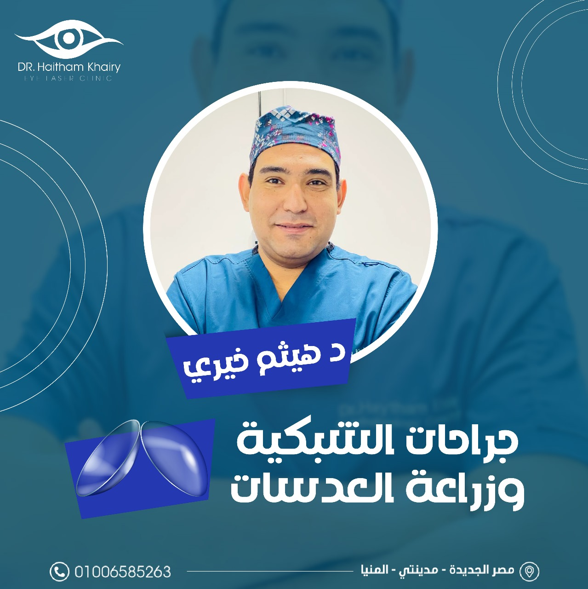
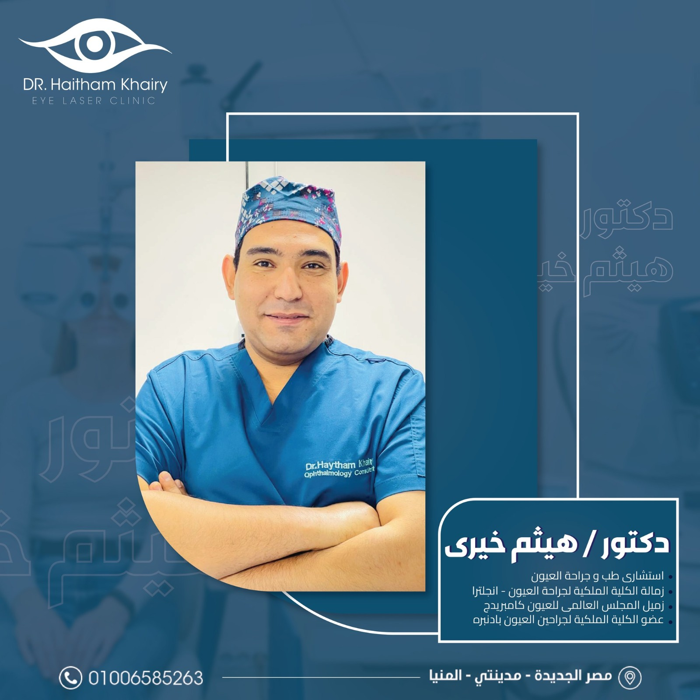
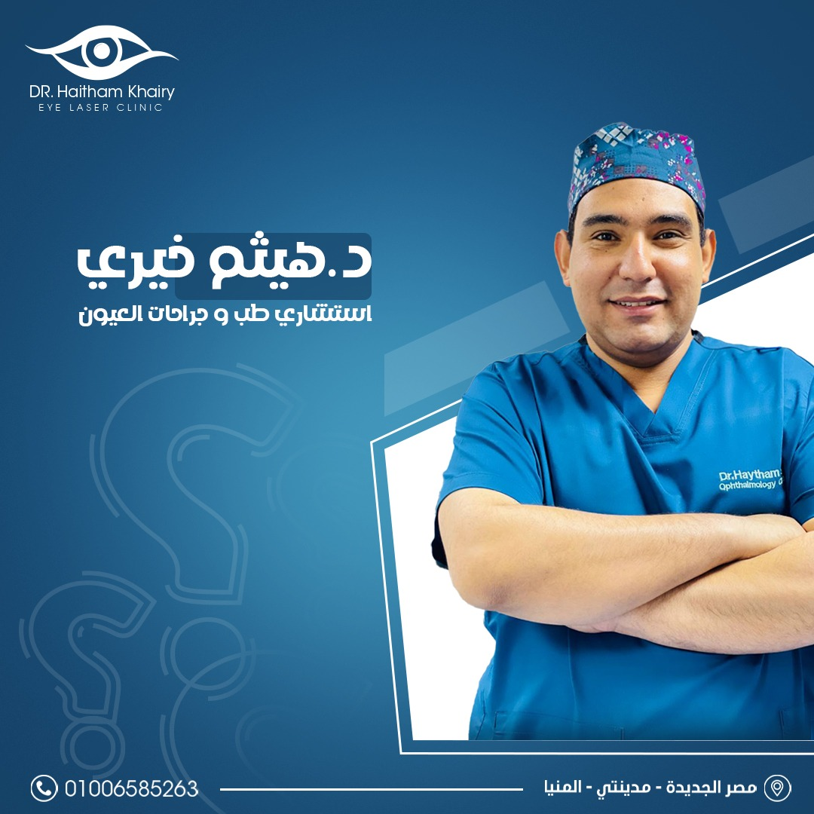

الدكتور هيثم خيري هو استشاري رائد في مجال طب وجراحة العيون، متخصص في جراحات القرنية، المياه البيضاء، زراعة العدسات، وتصحيح عيوب الإبصار بالليزر. يُعتبر من أبرز أطباء القرنية في مصر والوطن العربي، حيث تخرج من كلية الطب بجامعة عين شمس، إحدى أعرق المؤسسات الطبية في مصر. حصل على درجتي الماجستير والدكتوراه في طب وجراحة العيون بتقدير امتياز مع مرتبة الشرف.
الدكتور هيثم خيري يتمتع بخبرة واسعة تمتد لسنوات طويلة في مجال طب وجراحة العيون، حيث أجرى بنجاح أكثر من 5000 عملية جراحية متنوعة، شملت جراحات الشبكية ، المياه البيضاء، زراعة العدسات، وتصحيح عيوب الإبصار بالليزر.


تتجلى خبرته في تعامله مع حالات معقدة تتطلب مهارة ودقة عالية، ما جعله مرجعًا موثوقًا للأطباء والمرضى على حد سواء. شارك الدكتور هيثم في العديد من المؤتمرات الطبية الدولية
كما يحرص الدكتور هيثم خيري على تطبيق أحدث التقنيات العلاجية العالمية، ما يضمن تقديم رعاية طبية متقدمة وشاملة تغطي جميع مراحل العلاج، من التشخيص الدقيق إلى الجراحة والمتابعة، مما يجعله أحد أهم وافضل اطباء العيون فى مصر والوطن العربى.

الدكتور هيثم خيري يتمتع بسمعة مرموقة وثقة كبيرة من قِبَل المرضى، الذين أشادوا بمهارته الاستثنائية في مجال جراحات العيون. تعكس تقييمات المرضى الإيجابية مدى رضاهم عن النتائج الدقيقة والناجحة التي حققها في مختلف العمليات، سواء في جراحات القرنية، المياه البيضاء، زراعة العدسات، أو تصحيح عيوب الإبصار بالليزر.
تتميز تجارب المرضى مع الدكتور هيثم خيري بالراحة والاطمئنان، حيث يحرص على تقديم رعاية شخصية ومتابعة دقيقة لكل حالة، مما يساهم في بناء علاقة مبنية على الثقة المتبادلة. يشيد الكثيرون بحرصه على شرح تفاصيل العلاج والخطط الجراحية بوضوح، مما يساهم في تعزيز ثقة المرضى واطمئنانهم.

كما أن المركز الطبي التابع له مزوّد بأحدث التقنيات، ويتميز بفريق طبي متمرس يقدم دعمًا متكاملًا، مما يجعل تجربة العلاج شاملة ومتميزة. هذا المستوى العالي من الرعاية الطبية هو ما يجعل المرضى يوصون بالدكتور هيثم خيري كواحد من أفضل أطباء العيون في مصر والوطن العربي. واليك بعض اراء المرضي .